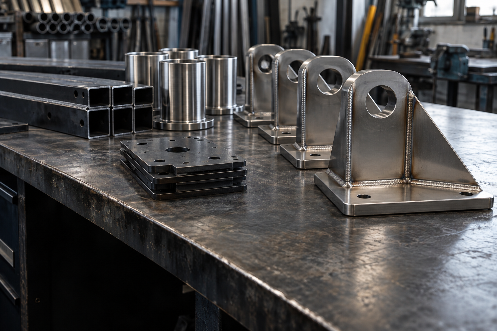
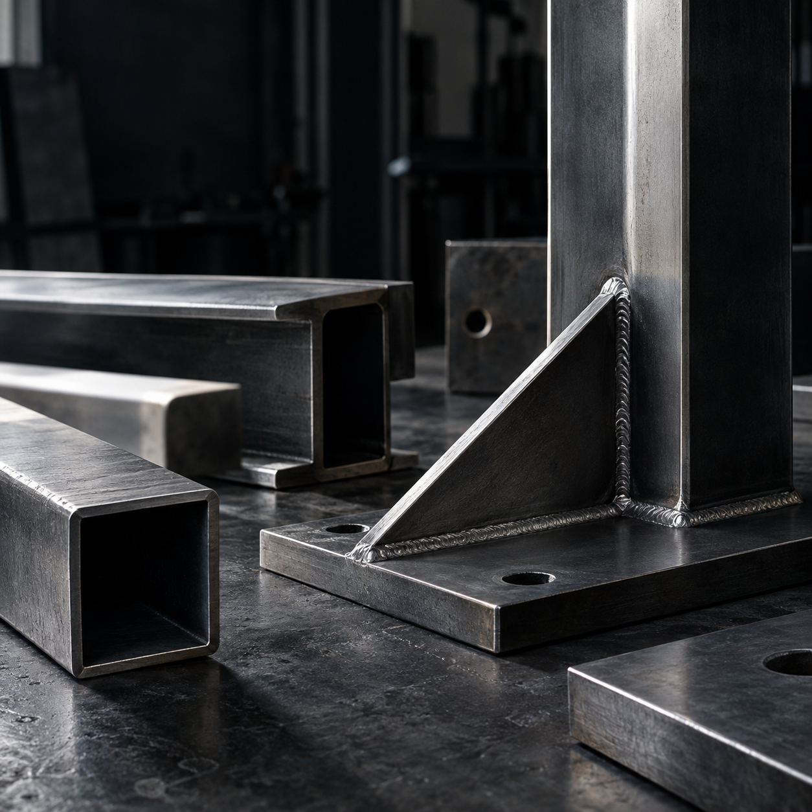

Baranes interiors d'habitatge
Fabricació i instal·lació de baranes per a la reforma interior d'un habitatge.
Veure projectes de particularsVilafranca del Penedès / Des de 1989
Fabriquem i instal·lem portes, baranes, estructures i automatismes per a habitatges, comunitats i negocis. Del mateix taller neix Carbó Industrial, la nostra línia de fabricació metàl·lica per a empreses.
 01 / Serralleria Carbó
Per a casa, comunitats i negocis
Particulars
Baranes, escales, portes, automatismes i mobiliari a mida. També atenem reparacions.
Veure serveis
01 / Serralleria Carbó
Per a casa, comunitats i negocis
Particulars
Baranes, escales, portes, automatismes i mobiliari a mida. També atenem reparacions.
Veure serveis

02 / Una branca de Serralleria Carbó Fabricació per a empreses CarbóFotografies conceptuals per a la maqueta. No mostren treballs ni instal·lacions de Serralleria Carbó.
Si falla una porta o un automatisme, explica'ns què ha passat i t'ajudarem a concretar la consulta.
Truca al 630 661 908Un taller a Vilafranca del Penedès, equip propi i capacitat per treballar en encàrrecs de particulars i en sèries curtes per a empreses.
 Fotografia conceptual · estudi de material
Fotografia conceptual · estudi de materialLa major part de la feina es fa a Vilafranca i la rodalia; també treballem en projectes fins a Barcelona. Per a sèries industrials podem valorar encàrrecs d'arreu de Catalunya.
Coneix l'empresaTroba el servei que s'ajusta al que necessites, tant si és una reparació com una feina feta a mida.
Fotografies i dibuixos conceptuals de la maqueta. No documenten treballs ni instal·lacions de Serralleria Carbó.
Sis casos recuperats de l'empresa, amb les fotografies originals encara pendents. Aquí pots recórrer-los un a un.

Fabricació i instal·lació de baranes per a la reforma interior d'un habitatge.
Veure projectes de particularsBaranes de ferro negre i una passarel·la per a l'interior d'un habitatge en reforma. Tot es va soldar i pintar a la mateixa obra.
Veure projectes de particularsFabricació i instal·lació d'una estructura per incorporar un ascensor a una comunitat que buscava millorar la mobilitat dins de l'edifici.
Veure projectes de particularsFabricació, instal·lació i motorització de la porta de pàrquing d'una comunitat de veïns.
Veure projectes de particularsFabricació, instal·lació i motorització de sis persianes enrotllables i de la porta d'un negoci.
Veure projectes de particularsFabricació i subministrament de deu gàbies per a un client industrial. El material i la soldadura es van escollir per a les exigències de pes de l'ús previst.
Veure el projecte industrialExplica'ns una incidència, descriu el projecte que tens previst o envia els requisits d'una peça. El contacte s'adapta a particulars i empreses.